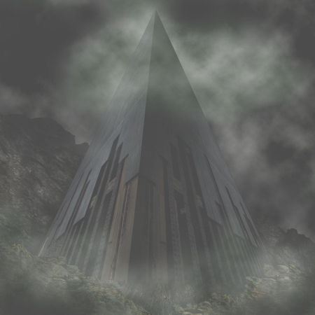

Marks (Part 1)
by
Andy Robertson
To Out (Part 1) — the first story in this series.
To Kiss (Part 1) — the second story in this series.
She was very quiet. She had stopped jumping and darting around. She seemed tired. She walked back, very close to me, resting her head on my shoulder from time to time.
When we were home she embraced me immediately. I thought we'd make love at last, as I had so longed to do, but what we actually needed was sleep, rest, sleep, now be together, asleep. The pain had stopped and we needed to
We undressed, and I did make some half-hearted moves toward her, but sleep, only sleep, fell over us both as soon as we felt each other's close warmth.
Waking, in the morning.
I could not touch her. What had I been thinking?
The room stank. Everything was filthy or broken, and stained. My wife lay beside me, and I remembered what had happened in the last few months. It came back to me in a sick rush as it did every morning, but this morning hope came to me as well. I looked at her half-afraid of what I might see, and I saw she was already awake and looking at me. And it was she who looked back, dazed, sick, but herself, returned. And the marks on her seemed merely cuts, clotting and closing normally at last, and she regarded them with something like human sanity and puzzled horror.
I wrapped her in the cleanest sheet I could find and I bid her lie quietly. She obeyed, closing her eyes, wincing and drawing breath as she stuck to the cloth and pulled free. I saw she had come back to me from the place she had gone to. She no longer swam in pain like water and breathed pain like air. Pain was now something to flee.
But I could not attend her for long, for I had to tidy the house and clean. I had to get part of it clean, at least. There was old blood everywhere, blood and fluid that had trickled from the marks and dried, staining the bedding and the clothes and the very food brown and yellow and no-colour. So I moved stuff from here to there and from there to elsewhere, hardly knowing where to begin, my head splitting. Typical bachelor house keeping. Oh yes, bachelor house keeping is bad, but how does it compare to life with a mad woman bleeding from scores of wounds? Bleeding from a god's unhealing kisses?
And do you wonder that I come near to joking about this? You do not need to know all I have known.
As I moved near to her, as I turned up some cushion where she lay, her hand rose to her face and started to trace. I grabbed her wrist and pulled it down hard on to the bed. She winced and started to curl up again.
"I am sorry."
"Sorry. No."
She curled up and away from me, and her face went white, under the horrible clotted marks on cheek and brow. But I bent down full of care, and I stroked her head as gently as I could, and she smiled back.
Vhasti was not dying, after all. I had not done anything special to keep him alive: not that he ever needed anything but a little sugar-water and plasma syrup. But the moths only last a year or two, and he had spent whole weeks clutching the top of the wall tapestry there and I thought he had died: but when I went to remove him, as I tidied, he started up with a whrrrr of tattered wings and flitted across the room.
She was fond of him but I never was: I had dreaded seeing him sip from the red lines on her face, and had nightmares about it. But the moths will not eat blood or carrion.
I sat down by Cahaire on the bed. I was not finished, but I had to rest. Vhasti ticked in a corner of the ceiling.
Cahaire curled up into my arms, and we lay for a while, and I wept, a very little. I was so very tired.
"But what did She say to you?"
"I am not very sure that I should tell, Bann."
"Respected wife, you can tell me, only me, if you whisper."
"Yes."
So then: her torn face touching and sliding across my face. And her whispering, close to my ear.
"She said, 'Daughter, I shall envy you.'"
For a year before, before it all began and before Scyrr returned, we had lived in her clan home, the Domus Vinafer. Her father always hated me, but he had given us some small wretched rooms when Scyrr went Out and I left the Watch and my whole career came crashing down. I had been in disgrace then and I had to find work and Rank. I who have walked the Rim, living in three and a half rooms and submitting to examination of one Guild board after another, shunned by my old friends. He despised me for failure but despite that he acted honorably, I admit. I despised him for an old fool but I acknowledged the fact of his honorable action.
To tell you the truth I hardly cared. Poverty meant nothing to Cahaire and me in those days except that we could spend more time stretched along each others' skin. We were happy. We were not foolish children and we knew something bad would come, for no happiness like that happiness ever comes without its counterweight of agony, ten for one, and sooner or later we knew we'd pay, but till then it didn't matter. "I don't want Eternity," she said. "Give me Now." I worshipped her and she accepted my prayers, and nothing mattered and nothing could go wrong. And we were happy, happy, happy, till Scyrr came back and a god stepped on all our lives.
And she was taken by the Brothers, by the followers of Scyrr in this city I mean, not the original Seventeen, and she received much of the new knowledge, much instruction of the flesh, in their way.
I wish I could have killed an hundred of them. But it was like fighting demons. They took us apart in the battles as if we were children. I saw one of them, a woman, kill three armed men with just her hands, dancing in between the blows as untouchable as a buzzing fly. But I have fought Scyrr when I was one among his band, in the Watch long ago, and yes, I made Scyrr, Scyrr himself, stretch his eyes once. I surprised a few of them. So now I have fought Beasts from the Land, Beasts in truth though they were shaped like men and women and marked with red and white, not black. It is not such an especial recommendation nowadays to have fought Beasts from the Land. But I have killed some of them too, and that is rarer.
After Scyrr died, of Onn's kiss, we fought them twenty to one, and though we lost five for one we killed them all. The last of them died dancing.
There are burned out areas now, and flooded places, and whole streets where power is still not up and the air stinks of rotting food. There are plazas where the blood still taints the tiles. Broken homes and dark passages, ruptured floors, dead Lamps, buzzing lights, hissing gas, bleeding ever since the Scream, when the whole Redoubt cried Her agony to the Land and broke and tore inside. We would never have won but for the Scream.
And there is no lack of spare room to live now. People are still turning, cutting themselves and trying to start it all up again, and being killed, much faster than they can be born.
After the Scream, after we had won at last and we were all trying to piece things back together, I got on with the old man better for a while. He respected me and he even feared me a little, for he had lost two nephews to the Brothers, they being among the first to cry in fascination and try the new ways, taking with them that one who was their cousin, my wife, and his daughter, as an offering. Betrayed by two children to the destruction of the third, he had real strength. I saw where Cahaire's spirit came from. And he respected me because I had been able to fight them, because I had gotten her back, so I gained a small thing: his respect, at last.
But it was a lie, and for what little it was worth it didn't last. I really care only for kisses and not for blows. We had won but I could not make her heal. He expected me to make her smile and get her with child, now we'd won and we were at peace and it was all supposed to be easy. But it is not easy, for any of us, after the ruin we have been dealt: and as for we two, I could not make her smile and she would not kindle in any way. I could not touch her or even reach the place she had been taken to, which was not kindness or violence or even some mix of the two but was nowhere at all along the spectrum where men deal with women. She was gone, though her body was here.
If I tried to touch her she ignored me. No, she tried to respond, but I might as well have put my thumb in her mouth as enter her.
If I struck her, then she woke up and she looked up as if she expected something more. She did not look hurt or in pain, she just looked Yes, And? And what follows?
I am not made very uneasy at the thought of hitting her. A woman with spirit will let you know sometimes, plainly enough and eagerly too, that she wants more flavour and sting than a caress. And she sometimes had. But this was different. There was no route from here to there. There was a whole language I did not know, a language of shapes of agony, not of tumbling and kissing and touching however rough. I could not speak that new language and I could not speak to her at all.
And had kept trying to be rational, trying to explain to me. She kept trying, by one strategy after another, to talk to me, in their new way.
She is not cleverer than me though she has always thought so. It's odd that it should be so but it is true. In fact I should have been the Scholar and she the Watchman. I think she still believed, somehow, even when she was a thousand miles away from all of us, far Out, walking through the lands of madness, she still believed that she was the wiser. She was so far away, but she was stronger than me, more stubborn even than me, and she kept trying to make me understand.
And I reasoned, then, after this manner: if she gives up trying to teach me this, they will kill her. Because if she gives up teaching me these new things, helping me—as she sees it—she will turn inward and be completely changed into one of the Brothers and will have to be killed by the Inquisitors, or by me. Killed before she starts it all up again. As we are still killing people, two or three people every day, in this City.
So I drugged her, and I ignored her madness, and I drugged her more deeply. I tried to bandage and treat the marks, that would not even clot, that kept trickling blood and plasma just a little, in a hundred different ways. I insisted she was well. Most of those who were taken have had to be killed, men or women, but a few have been recovered to normal life. I hoped she might be one, and so I walked the edge, on one side trying to ease her back to normality, ignoring her when she screamed, "I can't feel anything!" or broke glass and lay down or stood for hours without moving; and on the other side lying to everyone and concealing her true sickness from them, using every shred of honor and name I still possessed to keep her alive. Asking for help from friends who said Yes, Yes, and then vanished from my life. Knowing it could not last long, getting drugs for her illegally, and trying to do my daily work as well, being cut down and down and down to less and less and less. And with every other thing, fending off the idiots of her family and their stupid expectations and demands and taking of offence, fighting for her life.
It was worse than the battles when we were defeated again and again and again: it was worse than killing the women: it was worse than the Scream. It was the worst time of my life.
And then we met Her, in the Agora, the market.
I had heard confused rumors of Scyrr's death and how it was caused, and rumors of one seen walking the corridors and speaking to men and women, but I was not really thinking of them. I was not thinking. I had merely gone out to walk Cahaire about, trying, trying to be ordinary.
She appeared without announcement or escort and She came up to us. Everyone was looking, hardly believing: you could trace Her walk through the sparse crowds by the heads that turned and the people that changed their path, or bowed and curtseyed, or drew back in fear. But She herself did not look so special to me, and in truth I scarcely noticed anything until She was near us. Cahaire was moving in her new way, jerking, and I was trying to calm her, frantic and despairing and ashamed. I saw some disturbance approaching out of the corner of my eye, and I ignored it. I assumed it was some party of busybodies or maybe the Inquisitors and a final end to my trouble. I did not look.
But it was a lone woman. And She simply took my wife's hand, and led her aside.
What was She like?
She was tall, I remember, but deeply veiled, and loosely clothed all in grey-silver-white. Her hands were gloved, even her feet were muffled. There was no nimbus of the divine. I did not see any maddening beauty. I saw only a flash of Her cheek as She held Cahaire's hand, and embraced her, and whispered to her, and kissed her. Then something turned my eyes away, and kept them turned away.
I was obedient to that command. I have been a follower of Scyrr, and I do not wish to be enslaved by any god or goddess ever ever again. I do not desire to see Her face. I only want my wife back, and a measure of peace. I am sure She said more than Cahaire has told me, but I am content with what I know.
In the room, among the damp filthy sheets, we lay. Weariness came over me, and we slept again.
But before we slept, I kissed her five times, the formal way husbands are supposed to, which seemed fitting at that time: kissing gently down her as she lay, on brow, mouth, throat, navel, and cunt. And when I gave her her last kiss, she moved her hips just a little, being almost asleep. It was nothing conscious, but just a shift of the flesh, a statement from her body made after the way she used to be once and now was again. Made in the old way, not the horrible new way. I felt some peace return to my heart.
She had seemed to recover before, and relapsed, but now the days passed and passed and passed and the blow did not fall.
For two weeks she slept fifteen hours out of the twenty-four. She ate with a ferocious appetite. She came off the drugs that had just kept her from turning, and then she really was there again: herself, horribly fragile and weary, but herself. And at last I managed to get us a new domicile, a bigger suite of rooms, after a long interview with the old man in which I promised him my immortal spirit or something not dissimilar. He agreed she was better, and seemed to think I had been dilatory in not curing her sooner, and he sent his house servants to help us, as he should have done long before. So at last I had help. How do you explain these things? Why do people attack you by bands when you desperately need aid, and cover you with gifts only when you are again fortunate?
She started to be able to walk abroad: at last I could let her go alone without fear of her getting killed by the Inquisitors and their flankers or by some terrified mob without me near to cow them. She saw a real Doctor. She had the marks bandaged and treated properly.
We made painful, clumsy, unsuccessful, wonderful, love, trying not to hurt her or touch any of the still-raw skin.
She got better, every day. She began to relax and laugh. I marked her first true laugh, her first thoughtless song. She never talked about what had happened, and I must never, never, ask her, but she started to speak about other things, harmless ordinary things. Food and clothing, and her hair, and things like that.
But there are still the forty-seven marks on her, like spiral fractal flowers, the marks of the Brothers. For all those months they had not scarred or healed, for they were the holy stigmata of her new life. They had remained fresh, raw and keen, putting a layer of agony between her and the world, making the world for her red and blindingly sharp, every touch a wound, every surface flayed flesh, and every edge a razor. The marks are healing now and the ones on her cheeks have been tissue-blurred out, but the others will stay as scars forever.
Life became simple, life became ordinary, day followed day with a slow growth back to health, and I swore: never again. It is over.
And then, one morning, I was getting ready to go off to work with the gangs on the the net-reticulation, and she was being lazy, dozing in bed, and joking about what a bad lazy girl she was. Then she spoke seriously.
"I was thinking."
"Hmmmmm?"
"Shohr, that big man in the office, and Aaell?"
"Who is Aaell?"
"Oh, Bann, it is obvious! You have only to look at them together! I'll go tomorrow and speak with her."
"Who is Aaell, now?"
"A girl that I know."
"This is not your concern."
"But yes, it is. They need to be together."
"Let her engage a matchmaker, and send a message to his family."
"She can't."
"Why not?"
"Never mind why: it would take long to explain. It's private."
"Well why get involved in this? Don't we have enough trouble? Rest, be well, and leave this."
And I ran off, late. I had been temporarily Assumed by the local Netgangers, and I was busy doing labour in the hundred places that crude physical repair was needed, and I didn't really think how strange this was.
But I reflected when I came home, with a little cold fear inside me. Was she still well? I was unsure that she might not be falling back into madness, leaving me again to go Out into the strange lands she had walked. I entered our rooms with trepidation, looking ahead of me as if I expected an attack, but she seemed still herself, still eager to kiss me with a warm mouth, still ready with a joke, still relaxed and happy in her flesh, though wincing as she moved. Surely, she was well.
But I was used to lying to myself—"She is better today"—and knowing I was lying to myself. I tried to discern if I was lying now.
Among the children in the net-gangs, I was continually ragged for my history and my family, but never about my wife. Never. Within their impudence, they were scrupulous in their courtesy. Obviously I could not Fight children, but if they had mentioned her I would have had to do something serious. Their license was a way of testing my patience, asking if I was ready to be one with them, though it was not likely I ever would be completely, and a way of coping with the disruptions we had all suffered. They never mocked her, or even asked about her, but they had plenty to mock me for without that.
I was too big to squirm along the channels like the very young—Netgangers start at age seven—and I did not have the wealth of knowledge and local nous that the gaffers had, so I pulled loads and carried stuff for them, obedient to people a third my age, feeling very gentle and stupid. Some dark-haired youth or girl, as slim as a wire, would strip and oil and slide down a channel, or worm up it, and extract yet more fathoms of carbonised dataplex or another ruptured valve: we would pull them back by the cords round their ankles and toss the debris on the cart, which mostly I handled. Then we'd move on to the next. Or maybe we'd be concerned with rethreading, sending tame centipedes through the holes in the monochalkon to follow pheromone lures, and then pulling a sequence of thicker and thicker wires and equipment in.
In normal times this is a continual labour, though the care of the Spaces is a slow and perpetual repair not a desperate rushed healing. Now, we were trying to get the basics of the basics of the system re-established. The eternal Redoubt was unchanged, but the little temporary machines that threaded so many of Her veins were dead or smashed or burned or broken, and every one had to be replaced, and Her blood and nervous system rebuilt. Air, then water, then the flux of the Earth-current, then data.
There were stories, of Her, the one we had met. That She was a whore from the Dead Cities working deceit on us all. That She was the secret mistress of half the Great. That She was an hermaphrodite, one of the Grey folk-no-one-sees. That She was the spirit of the Mother Redoubt, gathered into one human body. That to look on her naked would drive a man insane with desire. That She had appeared and prophesied to the newly ascended Master Monstruwacan, leaving him weeping for a day and a night without pause, alone in his apartments. That She had been seen walking the Rim, white and pure on the evil dust, though none of the Guard had marked her enter or exit the Door.
And above all, of course, the story that She had seduced Onn, the lieutenant of Scyrr, and tricked him into killing his master and himself both.
That story, at least, may have been true: for something had slain Scyrr at the height of his triumph, leaving the Brothers leaderless and saving the Redoubt at the cost of a long civil war and much death.
But for the other tales, I know nothing, and still less could I believe. And least of all would I believe the whispered stories that She had been seen, again and again, in one city or another, talking to women— to women who had been marked in some terrible way by the war against the Brothers—and changing their lives. Healing them, yes, but also changing them forever. That, I would not credit.
"Someone comes to visit." She was playing with Vhasti on her wrist, her fingers talking to his antennae.
"Who"?
"A girl who wants to talk to me. A woman from the Library, that I know. Do not worry. But she is poor, and she won't have anyone with her. So you must be polite and not embarrass her."
"I shall, of course. And you are sure this is right, love? It will not insult her?"
"No."
"Why coming? Is she a friend?"
"Not a close friend, not a heart-friend: but I have to have dealings with her. Help me tidy, husband."
I helped, picking up cushions and smoothing covers and at last taking poor shabby old Vhasti-moth and putting him in his cage. Cahaire made tea and set it out with wine and fruits on our best table. I saw that she meant to give some real sign of honor and care to our guest, and rebuked myself for slackness and set to this or that detail with real attention. It was not so very unusual after all, though we were still young.
She came in through the small-Door and Cahaire went to meet her out in the compound with a smile and outstretched hands, limping and moving carefully: they embraced and they came in. She was a bony awkward tall woman with an unhappy pale face (but red with blushing when she unveiled, to be here with a strange man in his home, though his wife was there as well) and an unfortunate air of neediness and desperation that repelled, and a sharp strident voice. I left them alone as soon as I decently could, a little uneasy, and went off to thread and link a piece of mail, an old recreation I have taken up again to fill in odd times.
Their voices rose and fell gently: I wondered what they said, but I could not get close enough to hear and it would have been quite wrong to try. But if I could not hear words I could tell the mood of the speakers from the rhythm and tone of their voices and by the spaces where nothing was said. And important things were said, ordinary things that still meant everything to some lost one at the center of a knot of pain that had tightened for years: words that passed from guarded explanation to bitter, bitter, complaint to tears, to something like hope.
In a while I was ashamed of pretending not to eavesdrop and I went out to walk the compound, thinking. Wondering, actually, if my lot in life had been so very hard after all. And quite soon I saw our guest leaving, walking quickly and with quite a different posture and mood. Since I had lost any possibility of a host's decent politeness all I could do was to make a bow to her, and she did me a courtesy back, very gracefully.
I shuffled back in shamefacedly, to find Cahaire tidying and humming to herself. She poked me mockingly in the stomach.
"Recreant one. Letting your wife to face the deadly trial all alone."
"You have proven your case." I was a little angry despite everything. This had to be the very last time anything like this happened: but at least she was doing no harm. I did not know what to think. "Will she be happy with Shohr?"
"That was not Aaell. That was someone else entirely."
"And your wife"?
"Very well now, respected Senior." Sseun is a careful polite chap, very self-contained, though I would not want to cross him. He is one of those older men one does not somehow take seriously, until one gets to know them and they perhaps reveal unexpected depths. He had taught me most of what I knew at this task: my utility to the net gangs still hovered between "Pick this up and carry it over there" and "At least he will not electrocute us today," and I was stubbornly trying not to demand the honor of real work, but simply to do what was needed, however lowly. Of course it was difficult, with the awareness of status and Guild rank slowly coming alive again, now we knew we were going to live, but he had sponsored me at my temporary Assumption—made with four others by a bit of bread and a spark of electric fire in a burned-out channel in the Spaces, but real and formal in spirit—and so I could now be permitted to learn a little of their lore: and since I love knowledge of any sort, I had patently taken what I was fed, threading cables and petting keyboards.
"Concerning her..." He looked around. "I have a question, by your courtesy."
"You may ask, Senior."
"They say, she was Kissed..."
"I kiss her many times a day, yes!"&madsh;laughing.
"...but, by Her..." He was calm and very sure of himself: he has a way of bringing up these things that does not offend.
"Well, they may say that."
"So. And can she now make men and women fall in love?"
"No. That is nonsense. Pardon me, respected Senior. But she is again normal, that is all. She is an ordinary woman, not a witch with magic."
"I have heard..."
"She is not involved in this. You know me, and something of what happened to me. I want no more of it. Believe me, we have nothing more to do with this."
"Indeed. Your pardon."
"Respected Senior, have I offended you?"
"I do not speak as your Senior now, but as a brother."
"Well then, brother, have I not made myself plain? She is my wife. She will not be doing any such thing, now or ever again."
But something strange was happening. She was full of plans and actions, always contacting people on the limping seldom-available slipnet, suddenly happy, often busy and preoccupied, driven. She was still trying to bring people together, I discovered, eavesdropping, and I spoke strictly to her. She listened patiently and nodded, agreed to every reason I gave, and then frankly defied me. She was going to carry on.
We argued for a long time.
"You will put the matchmakers out of business."
"They are busy. They have never been so very busy. But I have a lot to do, Bann. I have but hardly started. There must be nothing improper or discourteous. We must be ready, and everyone must have someone."
"Ready for what?" I asked. But she turned her head and would not answer. Not the first time I asked, nor the second.
"Cahaire, listen to me." No response. A stubborn, set, back.
I bring the nest, and we plaster it to the wall, setting up the braces: now Lias and Fenner squirm up the channels and shove the transparent flexible ducts as far as possible. Compelled by another language than the one familiar to us humans, the ants start their travail, picking fragments and debris from the smallest ends of the clogged tracheae and carting them back through the guide tubes to their own little Redoubt, then returning for another load, and another, and another.
Only these tiny creatures can clean out the smallest channels of the Spaces, which otherwise would have been be blocked solid aeons ago. Mankind's oldest allies, they say, except the bees. How? From what ancient days? And the children sit here and chatter to each other, hardly worrying that we sit among such ruins.
"Watchman?" it is Kefy, the new one, eyeing me slyly. And the others look at him sidewise.
"Respected brother?" I make a calm face back.
"Is it true, you were one among Scyrr's men?"
This again. "Yes. I was a Watchman long ago. Three years now. Scyrr was my Captain. He desired that I should go Out with him. I did not, that is all."
"So now you work for us?"
"Yes."
"Why didn't you go Out?"
"You could not understand, child. Wait till your hair grows in white."
"Were you afraid"?
Now, if a grown man had asked me that...but Kefy is not a man. "No. In love."
"What did they meet Out There? What happened?"
"If I told you, the Inquisitors might come for you."
"I don't think you know."
"Then no one knows, child, except that they bought it back In here. That is what we fought. Did you fight?"
"Yes! I bought charges for the barriers, and threw darts: they were naked, and bleeding everywhere, even the women. And they moved fast! But in the end we killed them all. And I am not a child."
Astonishing. Astonishing. Given the lie, and answers demanded of me, by a boy, as if he had the Right and Rank. I have been quizzed by Scholars, by the Monstruwacans, by the Civitas, by the Great of the Redoubt. I was Scyrr's favored one, for a time. I might have been one of the Seventeen. I fought the followers of Seventeen.
And now I am forgotten, I play at work with stupid children, and keep house for a wife who ignores my will, and this seems my fate from now on. So I suppose I am an ant. I certainly labour like one, and I have fought like one, and it seems will-I-nill-I I am to be obedient to One who would use me up for Her own purposes and leave me to crawl away forgotten. But I think not.
I got home; there was a letter, ignored, in our division. I unrolled it and read it, then walked in to see her. She was tracing names and humming to herself, quite impudently ignoring me.
"Old Merety, and..."
"She is older than the Redoubt, that one."
She flashed angry eyes, jumped up, and stood over me full of scorn. "Evil words! She is..." but I had grabbed her and thrown her down on the couch, very angry indeed.
"Bann." She looked winded, terrified, but defiant. "You do not understand. Never ever ever say that."
"Cahaire, no, I do not understand." I sat down and pulled her bodily onto my knee, none too gently, holding her wrists tight together, and looked hard at her. "All these people. All these girls and women coming here. And the men are starting to ask me now, if you will go and talk to this one or to that one."
"Who? Keep note, and tell me. I will go."
"Cahaire, this is impossible. I have work, I have a million things. The whole slip-net is still down in this area. Half the houses lack clean water. There are still fires, smouldering, in the remote parts of the Spaces. Can't you smell them? I'm a Watchman, I want to be a Matross, and now I am here working as a sort of Netganger, with no formal Guild approval, using my field training only. I do not mind, hand helps hand, I am glad you are better, but my wife must behave. And there is this." I showed her the letter. "A Formal And Earnest request from the Eugenicists. I am desired to stop my wife interfering with marriage patterns in this part of the City, and to discipline you if need be." She took the letter and glanced at it. "The white-robed ones have taken notice: who knows what harm you are doing? Now, what am I to do?"
"You are still angry with me."
"Yes. And I will hit you if you change the subject again." I spun her round and smacked her twice on her hip, hard, to punish her, careful not to hit any of the scars. But she still sat stiff and haughty. "What am I to do with you, and all these things that you are doing? You are still on sick leave from the Library. Do you ever plan to go back? And how do I answer the Eugenicists?"
"Ignore them. They do not matter. Or if they persist, I will go and talk to the subChief, for Katyn-Blanche knows her."
"The local overChief is a man, and you cannot 'talk to' him and cozen him."
"It will hold them for long enough. And if it does not, offer to Fight. It involves your wife, so you have Right."
"Me thumping people at your whim is not the solution to all the Redoubt's problems. And if I have Right, I have no Rank, not for Fighting an overChief, not as an apprentice Netganger. What is happening? What are you doing?"
"Bann, I am better. I am well. I have never been so well. I should not have been rude to you, I am sorry, but this is important. If these people bother us, talk to Da. He does have Rank for them."
"No." But it might work. Her father would enjoy a chance to Fight. Curse her father. "They will stop you doing this. It would never have been allowed but for this emergency."
"It would never have been needed, but for this emergency. And they won't have time to stop me. It is only a little while. A few months more." She started to get up, dismissing me.
"No." I grabbed her again and bent her over, trying to hit her backside. She fought back with all her strength, punching and writhing, kicking, curling up and struggling, red faced. "Cahaire, explain to me. I am your husband. Please, please, explain. Mother Redoubt, Tell. Me. What. Is. Happening." I grabbed her by her shoulders and started to shake her from side to side, with real force, with a man's full strength: she fought, but I slapped her arms down again and again and shook her the more violently, shook her and shook her until she stopped resisting at last, surrendering in misery, tossing like a limp doll in my hands.
I stopped. She gasped and swayed, and tried to look at me.
I grabbed her again, shaking her forward and then back, forward and back. Her teeth clicked and rattled and her head flopped.
"Don't."
"Tell me."
"I can't. I can't explain."
"Tell me, or I'll hit you. Tell me!"
"I've got to do this. I've got to make things right. That is why I am doing this. Ah! Stop hurting me!"
"You've got to do what?" I held her with hands like metal, held her half-bent over, not able to straighten up or sit down. "Pair off every loser and ugly girl in the City? Why?"
"Because She wants me to. Because She told me to." Sobbing. "And they are not ugly. Bann, that's wrong. No-one is ugly when they are loved."
"You are mad. You will stop doing this."
"I'm not mad. Things are wrong. I am just trying to make them right."
"You will stop."
"I can't stop. I can't fight you, but I can't stop. Whatever you do to me I can't stop."
I let her sit down. She cradled her head and leaked tears, but not tears of surrender. I spoke more to her, angrily. But I don't recall what I said.
She stared at me, and stared at me, in tears, still defying me, shaking her head, cringing when I shouted, red bruises gathering on her face and arms.
I talked and talked. Noise.
"You can't stop?" at last.
"No. I mustn't. I don't care what you do." silence. "Bann, please..." She reached out a timid hand and touched my chest.
"I don't understand."
A stillness came over me. I realised that whatever I did she could not change. My arms ached. The places where she had hit me and scratched my flesh stung with little pains. I looked at her and saw only love and sorrow and pain and a desire to do right. Something was driving her, something was riding her, but perhaps it was not another black gap of horror. Perhaps it would be well.
The anger died in my heart. It was worse to hurt her like this than to be made nothing, it was almost worse to hurt her like this than to fear—- what? What did I fear? Why was I doing this to her?—- bruised and trembling, but still unsurrendered, still defying me. And I wondered, now, that I had attacked her, for the first time ever. Hurt her, when I had promised, promised and sworn, "Cahaire, I shall never!"—the light word is as an oath. And for no reason at all. When she was right, or at least doing no harm, and I was wrong.
I surrender. I can't fight.
I can only hope for mercy.
I took her hand. "I'm sorry. You can do this. I am very, very, sorry."
"It's all right, Bann."
My mouth spoke, almost of itself. "But—are, are you going to be—to change—be like that—again?"
"No. No, Bann, I am not going mad. No. Really."
I started to weep. "It will kill me. I will die, if you do it again." And that is true. I am strong, but I would kill myself. Death would be better.
But no, she was speaking the truth.
And we lay together, lay quiet, later, a little apart. I had recovered. I held her hand, by my side, and gathered my courage.
"Cahaire. I have never asked you, but I must now."
"Yes."
"When..."
"When they took me?" She spoke very low, and I did not look at her, beside me.
"Yes. What happened, what—can you tell, describe—?"
"I can't."
"Nothing? Perhaps, if only I understood. You are still mine, it was not any sin of yours. I love you as much as ever. More and more. For me you are clean, and my faithful wife. But how will I ever understand?"
"Well then. Listen." She spoke very simply and plainly, without emotions or overtones in her voice
"They took me to a different place. They took me far away. Where they lived. And they made me live there with them. That is all, really.
"And then you came, and killed them, and bought me back here." she paused "I wanted to go back there again, I wanted to for a long long time. But you stopped me and you held me back. So I thought you might come with me. And I tried to explain to you. But you didn't understand and you wouldn't listen."
"No."
"And then She came, and Kissed me, and spoke to me. And I realised, this is better."
"Better? Even if I hurt you?"
"Yes, better. Better. It is better here, with you, than in That Place. And you didn't really hurt me."
"I won't hurt you again. I never never hurt you before."
"No, no. I deserved it. I was bad and wicked. Disrespectful. Stubborn. It was nothing, Bann. Nothing, sweetheart."
© 2003 by Andy Robertson.
Artwork © 2003 by Martin Isitt.